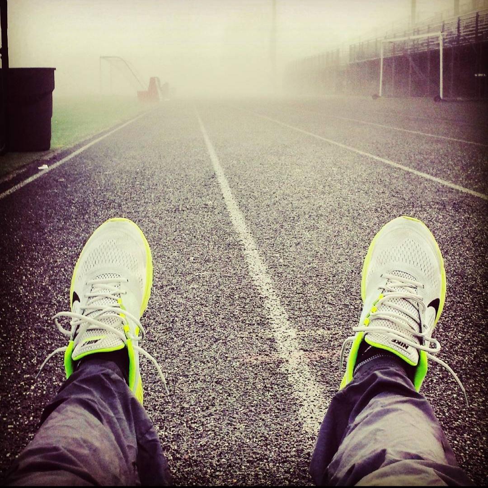
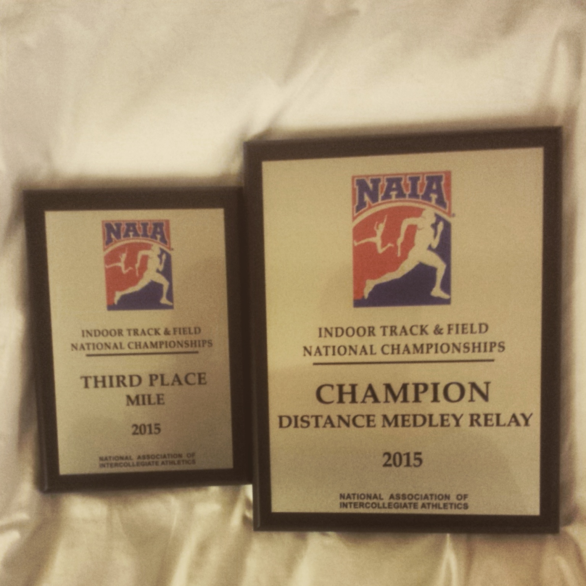

Brad Prettyman's Portfolio
About Me

Hello and welcome to my portfolio webpage! My name is Brad Prettyman and I am currently in the August cohort at Epicodus. I was a college athlete, which I am very proud of my accomplishments during that time, and a college grad to back that up! I wanted to learn how to code because it's something that really interests me and seems like quite the challenge! So far, I really enjoy the problem solving side of coding. Very excited to learn more about coding!
Education
- High School Diploma from Estacada High School
- Associate's of Arts Tranfer degree from Clackamas Community College
- Bachelor's in Exercise and Sports Science from Concordia University
Job Experience
I have worked most of my life at a machine shop called GrovTec. Started there on and off through high school and college, was offered and accepted a supervisor position when I finished college. This career lasted for 3 years.
Internships
- Cardiac Rehab at Providence St. Vincents.
- Assistant track and cross country coach for Concordia University (I count as an internship because it was unpaid)
Hobbies and Interests
- Exercising; running, resistance training, anything Sports related
- Video games; no specific one, just anything I can play with my friends
- Coaching; track, cross country, or basketball
- Building PCs
- Watching professional Sports (GO PATS!)
Projects from Week 1!

- Hello World
- This is my very first project uploaded to GitHub. Describes ways to say Hello in different languages.
- Programming Languages: HTML
- Favorite things
- Learned the basics of making lists in HTML by creating a project listingour favorite things.
- Programming Languages: HTML
- Cupcake Shop
- This project was to create a website for a cupcake shop that helped us practice basics of CSS.
- Programming Languages: HTML and CSS
- Favorite Bands
- A project that shows favorite bands of the developers. Was the first project we practiced using floats.
- Programming Languages: HTML, CSS, and Markdown
- Animal Shelter
- Project contains information on animals that are up for adoption from an animal shelter. Learned to create columns.
- Programming Languages: HTML, CSS, and Markdown